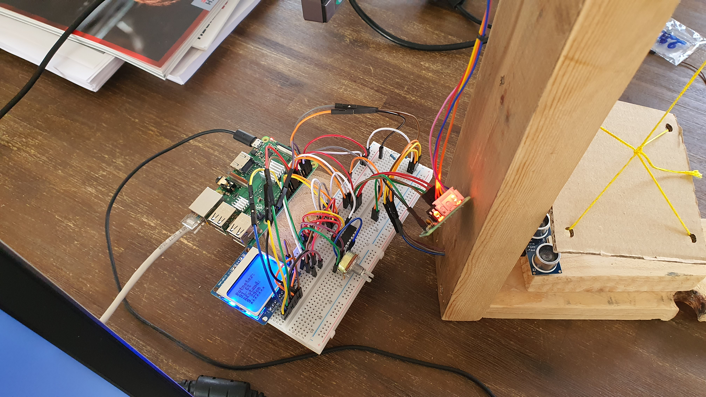

Op het einde van het vak IOT Essentials werd er een case-study opgelegd. De opdracht was om een platformpje horizontaal of verticaal te laten bewegen met een motortje. Dit moest je zelf programmeren en in elkaar steken. Het was een opdracht waarbij je de handen uit de mouwen moest halen. Hier heb ik een filmpje van gemaakt als bewijs. Je kan het via deze link bekijken op YouTube
De opdracht die ik gemaakt heb was om het platformpje omhoog en omlaag te laten bewegen. De onderdelen die ik hiervoor heb gebuikt zijn: Raspberry pi, lcd, potentiemeter en een steppermotor. Op de Raspberry pi was al de code geprogrammeerd om het correct in werking te laten gaan. De Pi stuurde het signaal door via het breadbord en de draadjes naar de lcd, potentiemeter en de motor. Naargelang de input van de potentiemeter ging het platform omhoog of omlaag. De Rapsberry pi detecteerde de input van de potentiemeter en sprak het programma aan om alles correct weer te geven en om de motor naar de juiste kant te laten draaien.
Omdat we alles zelf moesten maken, was het best een leuk project om te doen. Het is een keertje iets anders dan enkel maar achter de computer zitten.
Op de afbeelding is de constructie te zien. Alle kabeltjes, het schermpje, de potentiemeter en de afstandssensor. De bedoeling is dat het kartonnetje omhoog en omlaag gaat.

Het was een leuk en zeer uitdagend project, ook vooral omdat we het in elkaar moesten knutselen. Dit is leuk om te doen, maar IT'ers zijn er natuurlijk geen krak in. Ik heb met dit project veel dingen bijgeleerd over dit soort IOT en het programmeren ermee. Als een van de vele projecten die ik gemaakt heb, is dit één van de leukste. Als u het hele verslag wilt bekijken kan je een kijkje nemen op mijn GitHub repo waar de documenten met de uitgebreide uitleg op staan.